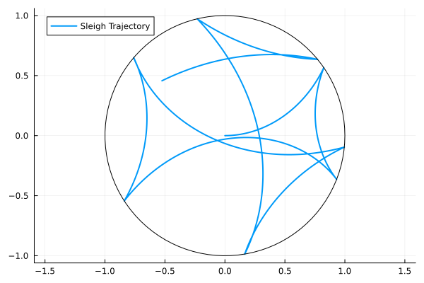

A Nonholonomic Example
A nonholonomic system contains the data $(M, V, A, G, N, R, E)$
- .$M(q)$ is the mass matrix.
- .$V(q)$ is the potential energy.
- .$A(q)$ is the Pfaffian constraint matrix.
- .$G(q)$ is the event location function.
- .$N(q)$ is the normal to the guard.
- .$R(q)$ is the reset/impact map.
- .$E$ is the coefficient of restitution.
The nonholonomic system has the Hamiltonian
\[ H(q,p) = \frac{1}{2}p^\top M^{-1}(q)p + V(q),\]
with the constraints
\[ A(q)\dot{q} = 0.\]
If a reset map is not specified, (nonholonomic) specular reflection is used.
The Chaplygin sleigh is a nonholonomic system on $(x,y,\theta) \in \mathbb{R}^2\times \mathbb{S}^1$ with mass matrix
\[ M(q) = \begin{bmatrix} m & 0 & -ma\sin\theta \\ 0 & m & ma\cos\theta \\ -ma\sin\theta & ma\cos\theta & I+ma^2 \end{bmatrix}\]
potential energy $V = 0$, and constraint matrix
\[ A(q) = \begin{bmatrix} -\sin\theta & \cos\theta & 0 \end{bmatrix}.\]
Creating a 'nonholonomic billiard' with a circular table makes the event function
\[ h(x,y) = 1 - (x^2+y^2) \geq 0.\]
import HybridDynamics as HD
import Plots as plt
using LaTeXStrings
a = 0.2
M_sleigh(q) = [1.0 0.0 -a*sin(q[3]);
0.0 1.0 a*cos(q[3]);
-a*sin(q[3]) a*cos(q[3]) 1+a^2]
V_sleigh(q) = 0.0
A_sleigh(q) = [-sin(q[3]) cos(q[3]) 0.0]
h_sleigh(q) = 1 - (q[1]^2+q[2]^2)
∇h_sleigh(q) = [-2*q[1], -2*q[2], 0.0]
sysNH = HD.NonholonomicSystem(M_sleigh, V_sleigh; A = A_sleigh, guard=h_sleigh, normal=∇h_sleigh, e=1)
probNH = HD.prob(sysNH, [0.0, 0.0, 0.0, 1.0, 0.0, 1.5], (0.0, 10.0))
solNH = HD.solve(probNH, solver=HD.RK4())HybridDynamics.NonholonomicSol{Vector{Float64}, Vector{Vector{Float64}}, Vector{Vector{Float64}}, prob{NonholonomicSystem{typeof(Main.M_sleigh), typeof(Main.V_sleigh), typeof(Main.A_sleigh), typeof(Main.h_sleigh), typeof(Main.∇h_sleigh), HybridDynamics.var"#NonholonomicSystem##2#NonholonomicSystem##3", Int64}, Vector{Float64}, Tuple{Float64, Float64}}, Vector{Float64}, Vector{Int64}, Vector{Float64}}([0.0, 0.01, 0.02, 0.03, 0.04, 0.05, 0.060000000000000005, 0.07, 0.08, 0.09 … 9.911220843067321, 9.92122084306732, 9.93122084306732, 9.94122084306732, 9.95122084306732, 9.96122084306732, 9.97122084306732, 9.98122084306732, 9.99122084306732, 10.0], [[0.0, 0.0, 0.0, 1.0, 0.27817403708987165, 1.4465049928673324], [0.010019011388194932, 6.689496663272718e-5, 0.01389585443905547, 0.9999106514430313, 0.29102532492179845, 1.4437204574719587], [0.020074706599429892, 0.00026810060210719734, 0.027765979930590986, 0.999642373174949, 0.3038995871347944, 1.4409304060591155], [0.030165069170667295, 0.0006043708274203815, 0.04161032606881834, 0.9991948600020744, 0.3167938286113983, 1.4381349493324032], [0.040288072521825716, 0.0010764232771244217, 0.05542884346767953, 0.9985678647270144, 0.3297050574397074, 1.4353341975286638], [0.0504416806905815, 0.001684939250611423, 0.06922148375650793, 0.9977611977792538, 0.3426302861058078, 1.4325282604114415], [0.06062384906382806, 0.002430563678850744, 0.08298819957562971, 0.9967747268215862, 0.35556653266959426, 1.4297172472645812], [0.07083252510547586, 0.0033139051063895936, 0.0967289445719069, 0.9956083763329897, 0.3685108219235405, 1.4269012668859644], [0.08106564908028302, 0.004335535688421884, 0.11044367339422309, 0.9942621271685516, 0.38146018653400043, 1.4240804275813839], [0.09132115477341432, 0.005495991202724681, 0.12413234168891343, 0.9927360160970571, 0.3944116681646404, 1.4212548371585525] … [-0.41007436332408287, 0.5091873443333177, 9.93490186054614, -1.2451013341998822, -0.6703236629650673, 0.663494027428731], [-0.4231594909933185, 0.5036085045307095, 9.94157405732919, -1.2408242229033783, -0.6779084035376675, 0.661607381332794], [-0.43620765577691395, 0.4979466515045362, 9.948228862591533, -1.2365084283615522, -0.6854439379313328, 0.6597258631762749], [-0.4492183889517617, 0.49220226918354404, 9.954866323628211, -1.2321545258972564, -0.6929301983624698, 0.6578494643278857], [-0.46219122801988155, 0.48637584290771313, 9.96148648765428, -1.227763087708144, -0.7003671226812185, 0.6559781760888005], [-0.47512571668002984, 0.48046785936166364, 9.96808940180419, -1.2233346828349603, -0.7077546542944156, 0.6541119896938761], [-0.4880214047988623, 0.47447880650890156, 9.974675113131182, -1.2188698771309947, -0.7150927420889426, 0.65225089631286], [-0.5008778483816644, 0.468409173526901, 9.98124366860669, -1.214369233232677, -0.7223813403554676, 0.6503948870515864], [-0.5136946095426628, 0.46225945074301933, 9.987795115119757, -1.2098333105312997, -0.7296204087125935, 0.6485439529531593], [-0.5249135924470119, 0.4567948810847543, 9.993532666482848, -1.2058225114270364, -0.7359348437397517, 0.6469231653186163]], [[1.0, 2.7755575615628914e-17, 1.3908701854493581, 0.0, 1.2838801711840229, -0.27817403708987165], [1.0037688497869268, 0.013392162817406739, 1.388299845085206, -0.017875769480682185, 1.2863274418805666, -0.27873118940863595], [1.0073365836927535, 0.026861530042859627, 1.3857244130126163, -0.03578496984121281, 1.2884750807067693, -0.27927724825084765], [1.0107021531696778, 0.04040447598732838, 1.3831439914195272, -0.05372178380281098, 1.2903233480546907, -0.2798122599607904], [1.0138645833064235, 0.054017369311481156, 1.3805586820630242, -0.07168042979965299, 1.2918726243747827, -0.2803362715435931], [1.0168229725101066, 0.06769657458019387, 1.3779685862633018, -0.08965516442474346, 1.2931234085374808, -0.28084933065140893], [1.0195764921560295, 0.08143845379843948, 1.3753738048977546, -0.10764028481584102, 1.2940763161498894, -0.2813514855696353], [1.0221243862061287, 0.09523936792796206, 1.372774438395197, -0.12563013098086934, 1.2947320778295188, -0.2818427852031764], [1.0244659707968011, 0.10909567838416045, 1.3701705867302068, -0.1436190880623053, 1.295091537437056, -0.282323279062752], [1.0266006337968516, 0.12300374851263443, 1.3675623494175957, -0.16160158854009304, 1.2951556502701072, -0.28279301725125633] … [-1.3103451308991871, -0.5537172247711912, 0.6680908328214528, 0.42575771247521604, -0.7609319643692087, -0.18892129256071755], [-1.306672486695339, -0.56204269484189, 0.6663493133483064, 0.42965490650721705, -0.7560149253799262, -0.18840806933652246], [-1.30295265798947, -0.5703198448405116, 0.6646125273576992, 0.43349441308034214, -0.7510908237672378, -0.18789570582325416], [-1.2991862686986106, -0.5785485302859098, 0.6628804668822886, 0.4372765430899402, -0.7461602267689902, -0.1873842088361355], [-1.2953739399235027, -0.5867286133984075, 0.6611531238923891, 0.44100161066087623, -0.7412236939003745, -0.18687358506771046], [-1.291516289903269, -0.5948599630156771, 0.6594304902970993, 0.44466993303054253, -0.736281776991938, -0.18636384108909482], [-1.2876139339714663, -0.602942454508936, 0.6577125579454169, 0.4482818304336175, -0.7313350202285951, -0.18585498335121914], [-1.283667484513507, -0.6109759696994692, 0.6559993186273422, 0.45183762598857574, -0.7263839601896034, -0.18534701818606308], [-1.2796775509254292, -0.618960396775492, 0.6542907640749716, 0.45533764558592854, -0.7214291258894663, -0.1848399518078821], [-1.276139360098358, -0.6259295024073429, 0.6527946524123287, 0.4583646499052579, -0.7170765004448019, -0.18439553599503444]], prob{NonholonomicSystem{typeof(Main.M_sleigh), typeof(Main.V_sleigh), typeof(Main.A_sleigh), typeof(Main.h_sleigh), typeof(Main.∇h_sleigh), HybridDynamics.var"#NonholonomicSystem##2#NonholonomicSystem##3", Int64}, Vector{Float64}, Tuple{Float64, Float64}}(NonholonomicSystem{typeof(Main.M_sleigh), typeof(Main.V_sleigh), typeof(Main.A_sleigh), typeof(Main.h_sleigh), typeof(Main.∇h_sleigh), HybridDynamics.var"#NonholonomicSystem##2#NonholonomicSystem##3", Int64}(Main.M_sleigh, Main.V_sleigh, Main.A_sleigh, Main.h_sleigh, Main.∇h_sleigh, HybridDynamics.var"#NonholonomicSystem##2#NonholonomicSystem##3"(), 1, -1), [0.0, 0.0, 0.0, 1.0, 0.0, 1.5], (0.0, 10.0)), [0.9180164412429498, 1.7612141575983298, 3.406380303149139, 4.34739784852396, 5.890857160286157, 6.7894562862270975, 8.306393446389123, 9.061220843067339], [93, 179, 345, 441, 597, 688, 841, 918], Float64[])θ = LinRange(0, 2π, 100)
xs = getindex.(solNH.x, 1)
ys = getindex.(solNH.x, 2)
plt.plot(xs, ys, label="Sleigh Trajectory", lw=2)
plt.plot!(cos.(θ), sin.(θ), label="", lc=:black, aspect_ratio=1)